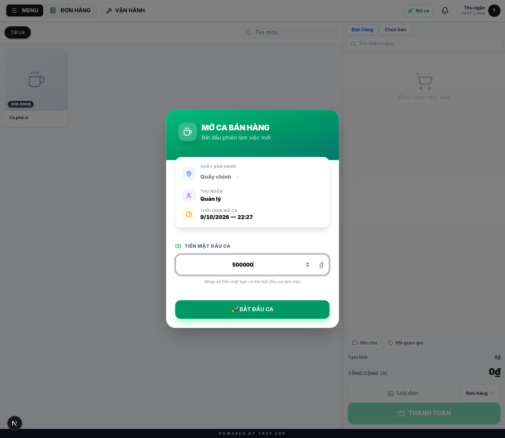
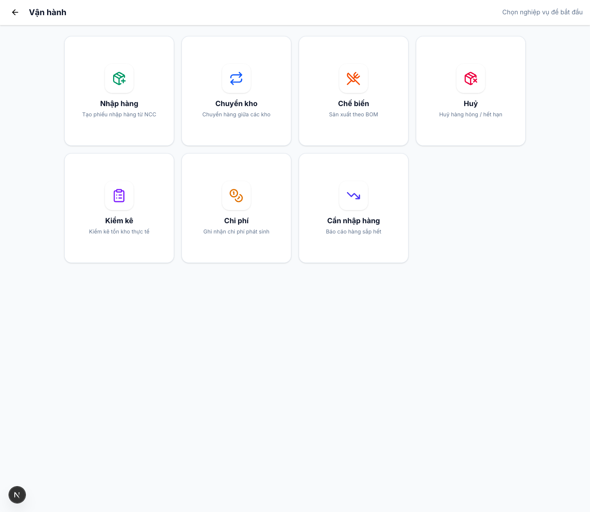

Chương 5 · Quy trình bán hàng tại quầy
5.6 Vận hành ca hoàn hảo — mô hình 3S
1. Đường dẫn vào chức năng
Bài tổng hợp, không có màn hình riêng. Dùng để in ra dán ở quầy.
- Làm đủ ba nhóm: Sạch – Sẵn sàng – Sổ khớp.
- Ca sau không phải dọn hậu quả của ca trước.
2. Ví dụ nền và các bước thực hiện
Ví dụ: một ca của nhân viên đứng quầy, chia làm 3 giai đoạn.
- S1 – Sạch: đầu ca, khoảng 10 phút.
- S2 – Sẵn sàng: trong suốt ca.
- S3 – Sổ khớp: cuối ca, khoảng 15 phút.
Bước 1S1 — Sạch (đầu ca, 10 phút)
- Mở ca bằng tài khoản của chính mình (mục 5.1).
- Đếm tiền két, nhập đúng số vào Tiền mặt đầu ca.
- Mở màn hình bếp ở khu pha chế, để nguyên cả ca (mục 4.4).
- Xem checklist của mình ở Quản lý nhân sự → Công việc (mục 5.2).
- Liếc ô Sản phẩm dưới định mức ở Tổng quan, có số thì báo quản lý.

Bước 2S2 — Sẵn sàng (trong ca)
- Bán hàng: lên đơn ngay, không ghi giấy rồi nhập gộp cuối ca.
- Lấy hàng từ kho tổng ra quầy: lập phiếu chuyển kho, đừng bê suông.
- Hàng đổ, hỏng, làm rơi: lập phiếu huỷ ngay lúc xảy ra.
- Chi tiền lấy từ két (ship, mua đá): lập phiếu chi ngay.
- Làm xong việc trong checklist: đánh dấu hoàn thành luôn.
- Các phiếu lập ở VẬN HÀNH (mục 5.3).

Bước 3S3 — Sổ khớp (cuối ca, 15 phút)
- Đếm tiền két, đối soát từng phương thức.
- Có chênh lệch: tìm nguyên nhân trước khi đóng ca (mục 5.4).
- Đóng ca, ghi lại số tiền để lại cho ca sau.
- Bàn giao miệng cho ca sau: hàng sắp hết, việc còn dở, khách hẹn quay lại.

3. Giải thích các trường
Ba khoản hay bị bỏ sót nhất
| Quên gì | Hậu quả xuất hiện ở đâu |
|---|---|
| Phiếu huỷ | Tồn kho hệ thống cao hơn thực tế. Tới lúc kiểm kho thấy thiếu mà không biết thiếu từ đâu |
| Phiếu chi | Két thiếu tiền. Chênh lệch cuối ca không giải thích được |
| Phiếu chuyển kho | Kho tổng trên hệ thống vẫn đầy trong khi kệ đã trống |
4. Lưu ý quan trọng
⚠️
Ba khoản trên đều là việc "để lát ghi".
- Ghi ngay tốn 30 giây.
- Truy ngược một chênh lệch tốn cả buổi.
💡
In bài này ra, dán ở quầy. Mỗi đầu ca mỗi người tự tick từng dòng.